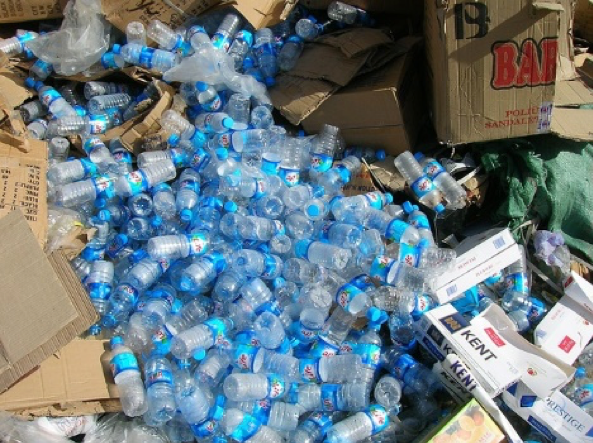
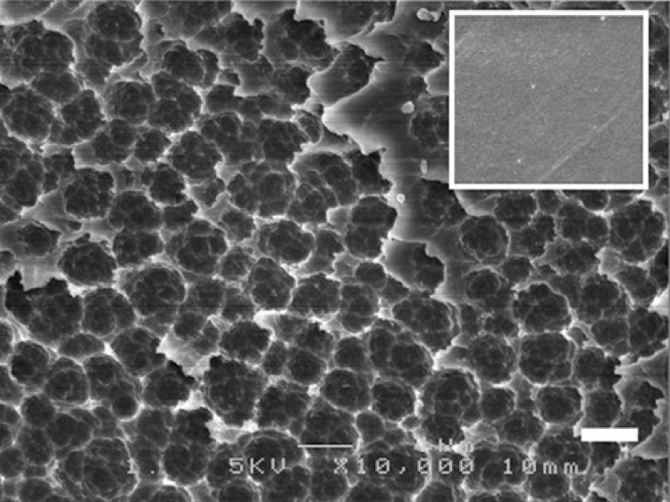

Concern for plastic pollution continues to mount, particularly for PET plastic that is most often used in plastic water bottles and about 56 million tons of PET were produced worldwide in 2013 alone. PET it is a very convenient manufacturing material for humans, however it is highly resistant to biodegradation, and continues to accumulate in ecosystems around the globe. To date, very few species of fungi — and no bacteria — have been found to break down PET.
Shosuke Yoshida of Keio University and colleagues searched for a type of bacteria that is capable of digesting the plastic polymer. "Microbiologists know that microbes can do anything," explained Yoshida. The researchers collected 250 environmental samples from the storage yard of a PET bottle-recycling factory and analyzed many different species of bacteria that were growing within the samples. One new bacterium, which they named Ideonella sakaiensis 201-F6, could nearly completely degrade a thin film of PET in six weeks, at a temperature of 30°C (or 86°F). The 201-F6 strain of bacteria uses just two enzymes to "eat" PET and break it down to its simpler — and more environmentally friendly — components. The first enzyme (called a PETase) breaks down PET into a compound called MHET. The second enzyme (called a MHETase) further breaks down MET.
A SCANNING ELECTRON MICROSCOPE IMAGE SHOWS PET FILM DEGRADED BY THE 201-F6 BACTERIUM (INSET IS INTACT PET FILM). | YOSHIDA ET AL., (2016)
While the ability to eat plastic is helpful for Ideonella sakaiensis 201-F6, humans may also be able to use the bacterium's enzymes to dissolve many of the masses of PET based plastics that have accumulated worldwide. However, much additional research is needed before application on commercial scales. "Many things are left uncovered," explains Yoshida. "For example, although PETase showed higher PET-[degrading] activity, the activity level is currently too low for industrial application."
"We have to answer the fundamental questions such as why PETase is more active and specific to PET compared to other PET-[degrading] enzymes," he added, "which could lead to creating the engineered enzyme appropriate for the practical use in the future."
Rapid innovative progress has recently been made on a mutant variety of PETase by researchers in the US and Great Britton that is more active that the originally discovered natural PETase. Researchers at the US Department of Energy's National Renewable Energy Laboratory (NREL), stumbled onto their mutant tweak while investigating the crystal structure of PETase – the enzyme that helps the Japanese microbe, Ideonella sakaiensis, break down PET plastics.
See additional info here.
This means future engineered versions of PETase should work even better at munching through plastic, and may be able to help us recycle other kinds of materials too. For instance, the tweaked PETase is also able to break down a PET substitute called PEF (polyethylene furandicarboxylate), which the natural PETase can't break down.
The modified PETase is an innovation that could lead to further improvements in PETase and related enzymes that could be produced on an industrial scale for usage on landfills worldwide to digest millions of tons of PET plastics.
Is this a paradigm changer in the approach to cleaning up the environment?
What do you think?